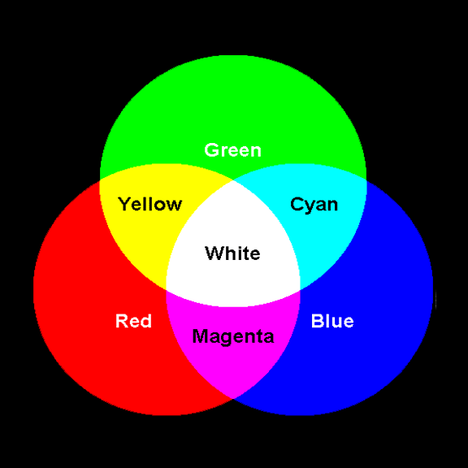

So there is such a thing as a pixel in your screen right now. This pixel can display three colors. These are Red, green and blue. So how do you get the rest of the colors then? Through addition!
You might know that by mixing different colors of paint you can create new colors! This is a subtractive process, because if you continue mixing different colors you will eventually get a darkish color. This is the opposite of additive mixing, since there you get a lighter color by mixing more colors! And the way you mix colors in pixels is by using different amounts of red, green and blue.
 fromIf you have the Gimp Image Manipulation Programm, there is a "channel" tab with three layers of red, green and blue. By selecting them you can directly paint on those layers and thus control the corresponding RGB LED's in the pixel!
I'm working on a easy drawing app where you might also try it out more easily, but not yet yet.